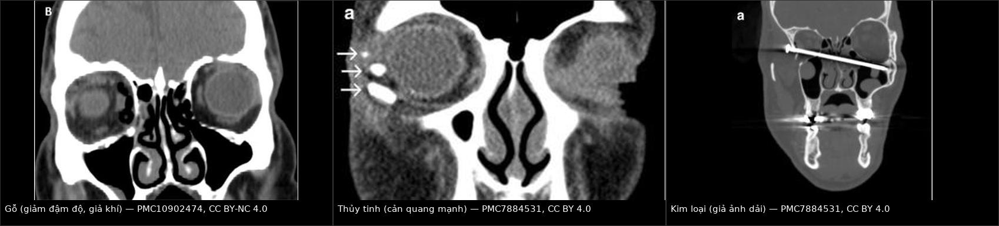
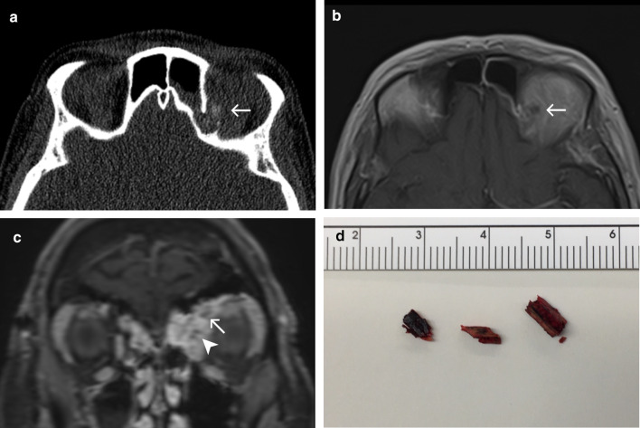
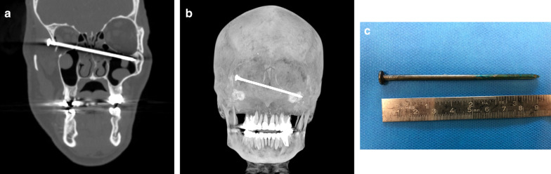
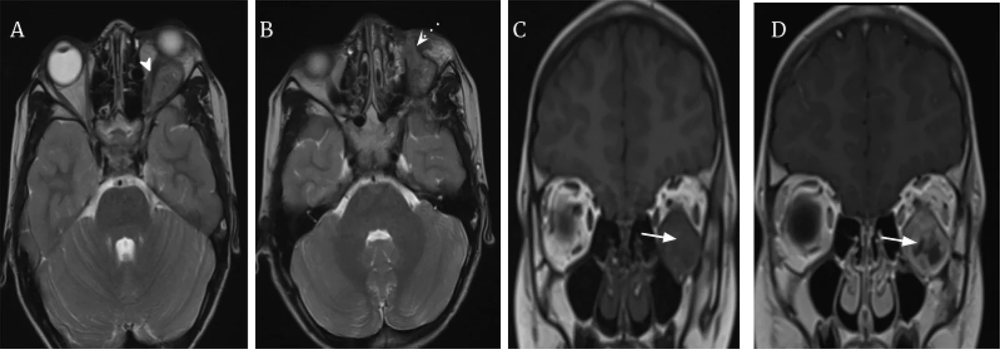
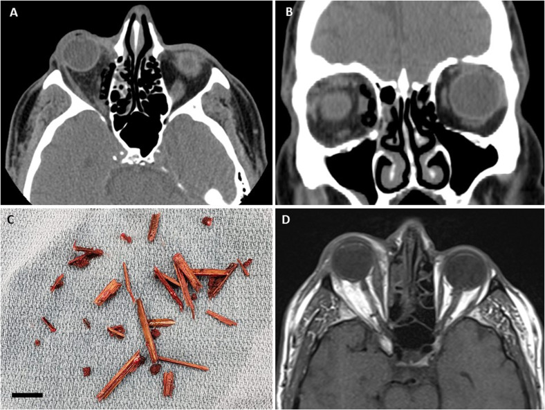
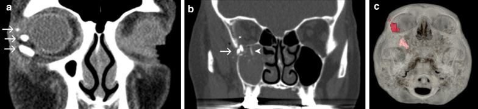

1506 — Dị vật hốc mắt tồn lưu: gỗ giả khí, thủy tinh cản quang, kim loại giả ảnh — và khi nào TUYỆT ĐỐI không chụp MRI / Retained intraorbital foreign body
Tags: pattern:di-vat pattern:giam-dam-do pattern:gia-anh-dai pattern:khi-mo-mem vung:hoc-mat vung:mat vung:non-co vung:dinh-hoc-mat anatomy:thanh-o-mat protocol:CT-1mm protocol:MRI-hoc-mat protocol:sieu-am-hoc-mat score:khong incidentaloma:khong
Mức chắc chắn (certainty): tổng hợp y văn (literature synthesis) — ghép bài tổng quan hình ảnh về dị vật đầu–mặt–cổ (Insights Imaging 2021 — PMC7884531, CC BY 4.0), loạt 30 ca dị vật gỗ hốc mắt (Indian J Ophthalmol 2026 — PMC42241355, CC BY-NC-ND; chỉ đọc số liệu), bài tổng quan tiếp cận chấn thương xuyên hốc mắt (Healthcare 2025 — PMC11765369, CC BY 4.0), loạt 15 ca chẩn đoán sót (Exp Ther Med 2017 — PMC5377438, CC BY-NC-ND; chỉ đọc), ca "near miss" trên CT (Plast Surg 2024 — PMC10902474, CC BY-NC 4.0), và ca dị vật gỗ ở trẻ bị đọc thành u hốc mắt trên MRI (Radiol Case Rep 2026 — PMC13499104, CC BY-NC-ND). Nhóm không có bệnh nhân của mình; chỗ suy luận ghi [suy luận].
Vị trí trong thư viện: 449 phủ vỡ nhãn cầu & dị vật NỘI nhãn; 1501 phủ chấn thương dây thị; 1505 phủ rách hắc mạc; 1461 phủ viêm mô tế bào hốc mắt. Bài này trả lời mặt còn trống: nhãn cầu lành, vết thương ngoài "nhỏ như không có", nhưng bên trong hốc mắt còn dị vật — đậm độ nào, đọc trên cửa sổ nào, có được chụp MRI không, và lấy hay để.
Câu chốt — năm con số phải thuộc: (1) CT chỉ phát hiện 42–72% dị vật gỗ, và tới 42% dị vật không kim loại bị bỏ sót ở lần đọc CT đầu (PMC10902474, PMC11765369). (2) Trong 30 ca dị vật gỗ hốc mắt, CT chỉ thấy 17 ca và 10 ca bị chẩn đoán sai ở lần đọc đầu; 14/30 (47%) đến với hình ảnh viêm mô tế bào hốc mắt, 7/30 (23%) có rò da–hốc mắt (PMC42241355). (3) Gỗ khô nhẹ hơn nước (độ đậm < 1 g/cm³ ≈ 0 HU) — có thể giả khí; thủy tinh +300 đến +600 HU (PMC7884531, PMC5377438). (4) Kim loại → giả ảnh dải (streak), làm mất chi tiết và che dị vật thứ hai; MRI chống chỉ định khi chưa loại trừ dị vật kim loại/nhiễm từ (PMC11765369). (5) Dị vật hữu cơ (gỗ, tre, gai) phải lấy bỏ sớm; mổ nên trong 3–12 giờ nếu có tổn thương nội sọ/mạch máu (PMC11765369).
1. Tổng quan bệnh học – cơ chế hình ảnh (TẠI SAO)
1.1 Giải phẫu: hốc mắt là hình tháp, mọi vật xuyên vào đều bị "dồn" về đỉnh
- Hốc mắt là tháp 4 thành với 7 xương, thể tích ~30 mL ở người lớn, thành trong (lamina papyracea) và sàn/trần rất mỏng (0,5–1 mm). Vật xuyên qua mi hoặc kết mạc bị hình tháp dẫn hướng về đỉnh hốc mắt — nơi có dây thị, động mạch mắt, hạch thể mi, khe ổ mắt trên (PMC11765369).
- Vì vậy vị trí lỗ vào không dự báo được độ sâu: một vết rách 1,5 cm ở mi dưới vẫn có thể kèm dị vật nằm sát trần hốc mắt (PMC10902474), và vật đi qua thành trong có thể vào xoang sàng, nội sọ (PMC7884531, Fig. 8).
- Hệ quả thực hành: mọi vết thương xuyên mi/kết mạc phải được mô tả trong nón (intraconal) hay ngoài nón (extraconal), trước hay sau vách hốc mắt (orbital septum), và cách đỉnh hốc mắt bao nhiêu mm — ba câu này quyết định đường mổ.
1.2 Vật lý đậm độ: vì sao "gỗ" không phải một con số HU
- Gỗ = cellulose + khí + nước. Tỷ trọng gỗ khô 0,35–0,9 g/cm³, tức dưới 1 g/cm³ ≈ dưới 0 HU — chỉ một số gỗ rất cứng (lignum vitae, ebony) mới > 0 HU (PMC7884531). Vì thế gỗ khô nằm trong hốc mắt có thể có đậm độ gần khí (−1.000 HU) hoặc mỡ (−40…−120 HU) và bị đọc là khí trong mô (emphysema).
- Gỗ tươi hoặc gỗ đã nằm lâu trong cơ thể hút dịch, viêm xơ quanh → đậm độ tăng dần lên mô mềm (+20…+80 HU), thậm chí thành "bóng tăng đậm độ không đều" sau nhiều tháng (PMC5377438, PMC7884531). [suy luận] Đây là lý do cùng một miếng gỗ có thể âm tính lúc cấp và dương tính giả u lúc mạn.
- Thủy tinh cản quang mạnh: +300 đến +600 HU, bờ rõ (PMC5377438). Kim loại thường > 1.000 HU, gây giả ảnh dải do beam hardening + photon starvation — càng dày càng nhiều dải, và dải có thể che một mảnh thứ hai nhỏ hơn (PMC7884531).
- Nhựa (plastic) là nhóm không đồng nhất: từ giảm đậm độ như mỡ đến cản quang nhẹ, có loại không thấy được trên CT (PMC7884531). Đá/sỏi cản quang, đậm độ tương đương hoặc hơn xương. Mảnh xương cùng đậm độ xương nhưng bờ thẳng, khớp với ổ khuyết xương; răng/mão răng rất cản quang, dễ nhầm kim loại.
| Vật liệu | Đậm độ CT điển hình | Dấu hiệu nhận diện | Nguồn |
|---|---|---|---|
| Gỗ khô | ≈ 0 HU hoặc âm (tỷ trọng < 1 g/cm³) | Ổ giảm đậm độ "hình học", bờ phẳng, có thể có cấu trúc bên trong | PMC7884531 |
| Gỗ tươi / gỗ nằm lâu | +20…+80 HU, có thể cao hơn | Tăng đậm độ không đều + viêm xơ quanh | PMC5377438 |
| Thủy tinh | +300…+600 HU | Mảnh sắc cạnh, bờ rõ, không giả ảnh | PMC5377438 |
| Kim loại | > 1.000 HU | Giả ảnh dải (streak), ảnh hưởng cả lát cắt lân cận | PMC7884531 |
| Nhựa | Rất thay đổi: âm → dương | Có thể không thấy trên CT; dựa vào gián tiếp | PMC7884531 |
| Đá / sỏi | Tương đương xương trở lên | Bờ đa giác, thường ngoài nón | PMC7884531 |
| Khí trong mô | −1.000 HU | Bóng tròn, không có cấu trúc bên trong, thay đổi theo tư thế | PMC7884531 |
1.3 Vì sao CT vẫn bỏ sót — ba cơ chế
- Hiệu ứng thể tích riêng phần (partial volume averaging): mảnh gỗ 1–3 mm nằm cạnh khí/xương/mỡ bị "pha loãng" đậm độ; trên lát 2–3 mm nó gần như biến mất. Lát ≤ 1 mm làm giảm hiệu ứng này (PMC7884531, PMC10902474).
- Chọn sai cửa sổ: ban đầu đọc trên cửa sổ mô mềm, nơi khí và gỗ cùng đen; cửa sổ phổi (W 1.500 / L −600) cho thấy cấu trúc bên trong của gỗ, phân biệt với bóng khí đồng nhất — đây chính là mẹo của ca "near miss" (PMC7884531 Case 1; PMC10902474).
- Bỏ qua dấu hiệu gián tiếp: khí hình học (geometric air pocket), khí – dịch, dày mô mềm không giải thích, viêm xơ quanh một "hạt" nhỏ". Trong ca near miss, ổ khí hình chữ nhật nằm dọc thành trong chính là hình dạng của miếng tre — không phải bóng khí tự do (PMC10902474).
1.4 Vì sao MRI thấy gỗ nhưng lại NGUY HIỂM
- Gỗ không có proton linh động → giảm tín hiệu trên T1 và T2 ("signal void"); mô hạt/áp-xe quanh ngấm thuốc viền → hình "ổ khuyết tín hiệu trong khối ngấm thuốc" (PMC7884531 Case 3, PMC13499104).
- Nhưng MRI không phân biệt được gỗ với mảnh xương, khí, hay vôi hóa, và một miếng gỗ khô nhỏ có thể "tàng hình" trên MRI (nghiên cứu thực nghiệm: gỗ < 3 mm khó thấy) (PMC7884531).
- Chống chỉ định tuyệt đối khi chưa loại trừ dị vật kim loại/nhiễm từ: từ trường có thể kéo lệch vật trong hốc mắt gây mù, xuất huyết, rách nhãn cầu. Vì vậy CT luôn đứng trước MRI trong chấn thương hốc mắt cấp (PMC11765369).
- Cạm bẫy đã được báo cáo: ở trẻ không có tiền sử chấn thương, MRI cho khối ngoài nón ngấm thuốc viền, trung tâm không ngấm → đọc thành u (schwannoma hốc mắt); 5 tháng sau mới lộ dị vật gỗ + áp-xe + rò (PMC13499104).
1.5 Sinh lý bệnh nhiễm trùng: vì sao gỗ khác kim loại
- Gỗ xốp, mao dẫn, mang hệ vi khuẩn hỗn hợp (Escherichia coli, E. vulneris, Bacillus cereus, liên cầu tan máu gamma, Enterococcus durans, Clostridium perfringens) → viêm mô tế bào, áp-xe, rò da, viêm mô hoại tử (PMC7884531).
- Trong 30 ca gỗ, 47% đến với viêm mô tế bào hốc mắt, 23% có rò da–hốc mắt, 8 ca phải mổ ≥ 2 lần, 2 ca mổ 3 lần (PMC42241355). Thời gian từ chấn thương đến lần khám đầu: 1 ngày – 7 năm.
- Kim loại/thủy tinh trơ hơn: có thể nằm yên nhiều năm; chỉ lấy khi có triệu chứng hoặc nằm ở vị trí nguy hiểm (PMC5377438).
| Đại lượng | Giá trị | Nguồn |
|---|---|---|
| Chấn thương xuyên hốc mắt trong tổng số chấn thương hốc mắt | 30–50%; 24% chấn thương sọ xuyên ở người lớn, 45% ở trẻ; ~0,4% mọi chấn thương đầu | PMC11765369 |
| Giới / tuổi | Nam:nữ 4:1; đỉnh 3–9 tuổi | PMC11765369 |
| CT phát hiện dị vật gỗ | 42–72% (các loạt khác nhau) | PMC10902474 |
| Dị vật không kim loại bỏ sót ở CT đầu | tới 42% | PMC11765369 |
| Loạt 30 ca gỗ: CT thấy / đọc sai | 17/30 thấy; 10 ca chẩn đoán sai; MRI 13 ca | PMC42241355 |
| Loạt 30 ca gỗ: biến chứng khi đến | viêm mô tế bào 14/30 (47%), rò 7/30 (23%); 8/30 mổ nhiều lần | PMC42241355 |
| Thời gian chấn thương → khám | 1 ngày – 7 năm; 16/30 trong tuần đầu | PMC42241355 |
| Thủy tinh trên CT | +300…+600 HU | PMC5377438 |
| Gỗ khô | tỷ trọng < 1 g/cm³ ≈ 0 HU | PMC7884531 |
| Cửa sổ giúp thấy cấu trúc trong gỗ | cửa sổ phổi W 1.500 / L −600 | PMC7884531 |
| Cửa sổ mổ khi có tổn thương nội sọ/mạch | 3–12 giờ | PMC11765369 |
2. Mẫu hình + chẩn đoán phân biệt theo vật liệu và vị trí (gamut)
Mẫu hình: bệnh nhân sau tai nạn "nhỏ" (cành cây, bút, kính vỡ, đũa, móc, đạn, tai nạn xe) có vết thương mi/kết mạc, đau – sưng – lồi mắt, hạn chế vận nhãn, nhìn đôi, giảm thị lực; hoặc đến muộn với viêm mô tế bào tái phát, rò mủ, sẹo co kéo. Câu hỏi hình ảnh gồm bốn lớp:
- Có dị vật không — và vật liệu gì (quyết định đậm độ + có được MRI).
- Ở đâu — ngoài nón / trong nón / đỉnh / xoang / nội sọ / trong nhãn cầu.
- Có biến chứng chưa — áp-xe, khí, máu tụ, giả phình, dò động mạch – xoang hang, tổn thương dây thị.
- Lấy hay để — hữu cơ luôn lấy; trơ, không triệu chứng có thể theo dõi.
2.1 Gamut theo vật liệu
- Hữu cơ (gỗ, tre, gai, củi, tăm): giảm đậm độ hoặc mô mềm, dấu khí hình học, phản ứng viêm mạnh, áp-xe/rò; CT âm không loại trừ.
- Thủy tinh: cản quang mạnh, nhiều mảnh, thường kèm rách mi, gãy sàn ổ mắt; nhìn thấy cả trên X-quang.
- Kim loại: cản quang cực mạnh + giả ảnh dải; nguy cơ nhiễm trùng thấp hơn nhưng tổn thương mô do tốc độ cao; không MRI.
- Đá / sỏi / cát: cản quang, thường ở mô mềm ngoài nón, ít phản ứng.
- Nhựa: có thể tàng hình trên CT/X-quang; tiền sử vật liệu là chìa khóa.
- Mảnh xương / răng: cùng đậm độ xương/răng; khớp với ổ khuyết xương hoặc ổ răng.
- Dị vật do phẫu thuật (lông mi, gạc, silicone, mảnh dụng cụ): bờ đều, không có đường vào do chấn thương, tiền sử mổ.
2.2 Gamut theo vị trí — vị trí quyết định biến chứng
- Ngoài nón trước vách: dễ sờ/thấy, thường do vật nhỏ; nguy cơ thấp, nhưng có thể di chuyển vào trong.
- Trong nón: nguy cơ dây thị, động mạch mắt, cơ vận nhãn; đau + hạn chế vận nhãn + RAPD.
- Đỉnh hốc mắt: hội chứng đỉnh (mù, liệt III–IV–VI, giảm cảm giác V1); mổ rất nguy hiểm — cân nhắc theo dõi nếu vật trơ, không triệu chứng (PMC5377438).
- Trần hốc mắt → nội sọ: dò dịch não tủy, máu tụ, áp-xe não; cần CT/CTA + hội chẩn ngoại thần kinh.
- Thành trong → xoang sàng/mũi: dễ bỏ sót, biểu hiện chảy máu mũi, viêm xoang một bên.
- Sàn → xoang hàm: thường kèm gãy sàn ổ mắt, khí xoang.
- Thành ngoài → hố thái dương: nguy cơ động mạch thái dương nông, cơ thái dương.
- Trong nhãn cầu: chuyển sang 449 — khác hoàn toàn về tiên lượng và thời điểm mổ.
2.3 Thể "kín đáo" (occult) — nhóm bị bỏ sót nhiều nhất
- Bài tổng quan mô tả: thể không kín đáo thường có vết rách bờ ổ mắt trong hoặc mi trong; thể kín đáo hay chỉ có vết thương nhỏ ở mi ngoài — dễ bị xem là "xước nhẹ" (PMC11765369).
- Trẻ em không kể được cơ chế, người say/nhiễm độc, bệnh nhân đa chấn thương là nhóm không có bệnh sử → chỉ còn chỉ số nghi ngờ và hình ảnh (PMC5377438, PMC11765369).
3. Bảng so sánh phân biệt (ma trận đối chiếu)
| Thực thể (entity) | Hình ảnh điển hình (CT/MRI/US) | Chốt vào (rule-in) | Chốt loại (rule-out) | Gợi ý xác nhận |
|---|---|---|---|---|
| Dị vật gỗ (wood) | Giảm đậm độ ≈ 0 HU hoặc mô mềm, ổ khí hình học, bờ phẳng; MRI giảm tín hiệu T1/T2, viền ngấm thuốc | Tiền sử vật hữu cơ + ổ giảm đậm độ có hình dạng + khí/viêm quanh | Bóng khí tròn, không cấu trúc, mất khi đổi tư thế → khí đơn thuần; bờ xương liên tục → mảnh xương | Cửa sổ phổi, đo HU, MRI sau khi loại trừ kim loại, siêu âm đầu dòng |
| Dị vật thủy tinh | +300…+600 HU, nhiều mảnh sắc cạnh, không giả ảnh; X-quang thấy | Cản quang mạnh + nhiều mảnh + cơ chế kính vỡ | Kim loại (giả ảnh dải, > 1.000 HU); mảnh xương (khớp ổ khuyết) | CT cửa sổ xương, đối chiếu X-quang |
| Dị vật kim loại | > 1.000 HU + giả ảnh dải, ảnh hưởng lát lân cận; 3D MIP cho đường đi | Giả ảnh dải + cản quang cực mạnh + 3D thấy trục vật | Không có giả ảnh → thủy tinh/xương; giả ảnh do răng/mão ở người không chấn thương | Cửa sổ xương, MIP 3D; không MRI |
| Đá / cát / sỏi | Cản quang ≥ xương, bờ đa giác, thường ngoài nón | Nhiều hạt nhỏ + cơ chế ngã/va đập đất đá | Một mảnh lớn có cấu trúc → gỗ/xương | CT, hỏi môi trường tai nạn |
| Nhựa / silicone | Có thể âm hoặc dương nhẹ, bờ đều | Tiền sử vật liệu + ổ dịch/viêm quanh | Có cấu trúc gỗ → hữu cơ | Siêu âm (tăng âm), MRI |
| Mảnh xương hốc mắt | Cùng đậm độ xương, bờ khớp ổ khuyết, thường cạnh gãy | Ổ khuyết xương tương ứng + bờ gãy khớp | Không có ổ khuyết + bờ tròn nhẵn → dị vật | CT cửa sổ xương, MPR |
| Răng / mão / amalgam | Rất cản quang + giả ảnh, ở vùng hàm trên/xoang hàm | Ổ răng khuyết + tiền sử chấn thương hàm mặt | Nằm trong hốc mắt, không liên quan ổ răng → dị vật | CT hàm mặt, khám răng |
| Khí trong mô (emphysema) | −1.000 HU, bóng tròn, có thể thay đổi theo tư thế | Sau chấn thương xoang/mũi, bóng khí nhiều ổ | Ổ khí có hình dạng "vật thể", bờ phẳng, không đổi tư thế → nghĩ gỗ | Cửa sổ phổi, so sánh 2 tư thế |
| Áp-xe / mô hạt do dị vật | Khối ngấm thuốc viền, trung tâm không ngấm, có thể giống u | Viền dày + khí/dị vật bên trong + rò | Không có cấu trúc trung tâm, không rò, không tiền sử chấn thương → u thật | MRI, không sinh thiết mù trước khi loại trừ dị vật |

Trái: gỗ trong hốc mắt phải — ổ giảm đậm độ hình chữ nhật dọc thành trong, khác bóng khí tròn xung quanh (PMC10902474, CC BY-NC 4.0). Giữa: thủy tinh — nhiều mảnh cản quang mạnh ở hốc mắt phải, kèm gãy sàn (PMC7884531 Fig. 12a, CC BY 4.0). Phải: kim loại — đinh xuyên qua thành ngoài hốc mắt phải sang xoang hàm trái, giả ảnh dải dọc trục (PMC7884531 Fig. 8a, CC BY 4.0). Ảnh ghép letterbox, không crop nội dung chẩn đoán.3.1 Trình tự đọc CT — 6 bước cố định
- Cửa sổ mô mềm: tìm khối/ổ bất thường, khí, máu tụ, dày mô mềm không giải thích.
- Cửa sổ xương (W 2.000 / L 400): gãy thành, mảnh xương, dị vật cản quang, giả ảnh dải.
- Cửa sổ phổi (W 1.500 / L −600): cấu trúc bên trong của gỗ — đây là bước hay bị bỏ nhất (PMC7884531).
- Đo HU tại 3 điểm của tổn thương (trung tâm + 2 bờ) — âm ≈ gỗ khô/khí, +300…+600 ≈ thủy tinh, > 1.000 ≈ kim loại.
- Dò đường đi (trajectory): từ lỗ vào → thành nào → có vào xoang/nội sọ/đỉnh không; dựng MPR coronal/sagittal và 3D MIP nếu kim loại.
- Tìm dị vật thứ hai: giả ảnh dải có thể che mảnh nhỏ; xem lát cắt xa ổ giả ảnh và cửa sổ khác.
3.2 Dấu hiệu trên từng modality
| Modality | Thấy gì | Không thấy gì |
|---|---|---|
| X-quang | Thủy tinh, kim loại, đá; gãy xương lớn | Gỗ, nhựa, dị vật < 2 mm; không định vị 3D |
| CT ≤ 1 mm + MPR | Chuẩn: vị trí, đường đi, gãy xương, khí, máu tụ; cửa sổ phổi cho gỗ | Gỗ rất khô, < 3 mm; dị vật bị giả ảnh dải che |
| MRI | Gỗ giảm tín hiệu T1/T2, viền ngấm thuốc của áp-xe/mô hạt; tổn thương dây thị | Kim loại (chống chỉ định); gỗ khô < 3 mm; mảnh xương |
| Siêu âm | Dị vật nông tăng âm + bóng lưng, kiểm tra ngay sau lấy | Vật sâu sau xương; không dùng khi nghi vỡ nhãn cầu |
| CTA / DSA | Giả phình, dò động mạch – xoang hang, chảy máu hoạt động | Bản thân dị vật nhỏ, vật liệu hữu cơ |

(a) CT trục: cấu trúc tăng đậm độ nhẹ sát trần hốc mắt trái, kèm khuyết xương thành trước xoang trán. (b) T1 sau tiêm: cấu trúc giảm tín hiệu. (c) T1 fat-sat coronal sau tiêm: ba ổ giảm tín hiệu và mô hốc mắt ngấm thuốc mạnh. (d) Ba mảnh gỗ lấy ra. Nguồn: Insights Imaging 2021 (PMC7884531), CC BY 4.0.4. Protocol chụp + thuật toán lấy/để (không có RADS — có quy tắc)
4.1 Ai phải chụp
- Mọi vết thương xuyên mi, kết mạc, bờ ổ mắt, kể cả vết nhỏ; mọi chấn thương đầu–mặt có gãy xương ổ mắt; trẻ không kể được cơ chế (PMC11765369).
- Nghi ngờ cao khi: đau/sưng kéo dài > 1 tuần sau "vết xước", viêm mô tế bào tái phát cùng bên, rò mủ, hạn chế vận nhãn mới, RAPD mới — trong ca near miss, RAPD xuất hiện ngày thứ 2 mới thúc đẩy xem lại CT (PMC10902474).
4.2 Thông số
- CT hốc mắt/hàm mặt không cản quang, lát ≤ 1 mm, axial + coronal MPR, 3 cửa sổ: mô mềm, xương, phổi; FOV nhỏ, không nhiễu kim loại nếu có thể.
- CTA khi nghi chảy máu, giả phình, dò động mạch – xoang hang, bóc tách (PMC11765369).
- MRI hốc mắt chỉ sau khi CT loại trừ kim loại/nhiễm từ: T1, T2 fat-sat, T1 fat-sat sau tiêm, DWI; mục đích là áp-xe, mô hạt, tổn thương dây thị, không phải "tìm dị vật" đơn thuần.
- Siêu âm cho dị vật nông vùng mi/kết mạc; không ấn đầu dò khi nghi vỡ nhãn cầu (chuyển 449).
4.3 Lấy hay để — quy tắc thực hành
- Lấy bỏ: mọi dị vật hữu cơ (gỗ, gai, tre, cỏ); mọi dị vật có triệu chứng (đau, viêm, hạn chế vận nhãn, chèn ép thị thần kinh); dị vật gần đỉnh/ống thị gây RAPD; dị vật trong nhãn cầu.
- Có thể theo dõi: kim loại/thủy tinh/cát nhỏ, trơ, không triệu chứng, xa đỉnh hốc mắt — theo dõi lâm sàng + CT/MRI khi có triệu chứng (PMC5377438).
- Thời điểm: 3–12 giờ nếu có tổn thương nội sọ/mạch máu hoặc chèn ép thị thần kinh; còn lại sớm, trong 24–48 giờ — vì gỗ càng để lâu càng dính, càng nhiều mủ (PMC11765369, PMC42241355).
- Kháng sinh: phổ rộng, ngấm tốt vào hệ thần kinh trung ương (ceftriaxone ± ciprofloxacin ± metronidazole), uốn ván theo lịch, cấy dị vật + mô khi lấy (PMC11765369).
- Không sinh thiết mù một "khối hốc mắt" khi chưa loại trừ dị vật: ca trẻ 10 tuổi bị đọc là u, chọc/sinh thiết sẽ gieo mủ ra đường rò (PMC13499104).

(a) CT coronal: đinh cản quang cực mạnh đi từ thành ngoài hốc mắt phải, xuyên qua hốc mắt và xoang sàng sang xoang hàm trái; giả ảnh dải dọc thân đinh. (b) 3D MIP cho thấy toàn bộ trục vật. (c) Đinh sau lấy. Nguồn: Insights Imaging 2021 (PMC7884531), CC BY 4.0.flowchart TD
A[Vết thương xuyên mi hoặc hốc mắt] --> B[CT không cản quang lát 1 mm + MPR, ba cửa sổ]
B --> C{Có cấu trúc cản quang hoặc giảm đậm độ bất thường?}
C -->|Có| D[Đo HU, dò đường đi, kiểm tra đỉnh hốc mắt, xoang, nội sọ]
C -->|Không nhưng vẫn nghi| E[Cửa sổ phổi + siêu âm nông; MRI sau khi loại trừ kim loại]
D --> F{Dị vật hữu cơ hoặc có dấu nhiễm trùng?}
E --> F
F -->|Có| G[Lấy bỏ sớm, kháng sinh phổ rộng ngấm thần kinh, cấy]
F -->|Không| H{Vật trơ, không triệu chứng, xa đỉnh hốc mắt?}
H -->|Có| I[Theo dõi lâm sàng + CT hoặc MRI khi có triệu chứng]
H -->|Không| G
G --> J[Kiểm tra lại CT sau mổ nếu nghi còn mảnh]
5. Biến thể bình thường và cạm bẫy
- "Khí trong hốc mắt" không đồng nghĩa khí: sau chấn thương xoang, khí vào hốc mắt là bình thường; nhưng ổ khí có hình dạng (chữ nhật, que, bờ phẳng) là dị vật gỗ — phải xem cửa sổ phổi (PMC10902474, PMC7884531).
- Giả ảnh dải "xóa" dị vật thứ hai: ở ca nhiều mảnh kim loại, dải sáng–tối có thể che mảnh nhỏ; đọc source images và cửa sổ xương, không chỉ ảnh tái tạo (PMC7884531).
- Phần mềm giảm giả ảnh (metal artifact reduction) có thể "xóa" luôn kim loại — luôn đọc cả ảnh gốc (PMC7884531).
- Mảnh xương ≠ dị vật: mảnh xương có bờ khớp ổ khuyết và đậm độ xương; nếu không chắc, MRI giúp (xương có tủy/vỏ, gỗ giảm tín hiệu đồng nhất) — nhưng chỉ sau khi loại trừ kim loại.
- Dị vật gỗ "thành u": sau nhiều tháng, mô hạt + áp-xe tạo khối ngấm thuốc viền; trên MRI trung tâm giảm tín hiệu dễ bị đọc là schwannoma/lymphoma — tiền sử chấn thương và dấu hiệu viêm/rò là chìa khóa (PMC13499104).
- "CT âm tính" là câu trả lời sai: CT chỉ thấy 42–72% dị vật gỗ; nếu cơ chế gợi ý gỗ mà CT âm, phải siêu âm/MRI hoặc chụp lại sau 1–2 tuần (PMC10902474, PMC11765369).
- Sót mảnh khi mổ: gỗ dễ gãy vụn khi gắp; lấy nguyên khối, rửa sạch ổ áp-xe, và chụp kiểm tra nếu nghi còn mảnh (PMC42241355).
- Di chuyển muộn: dị vật có thể di chuyển vào xoang, hố thái dương, nội sọ theo thời gian — triệu chứng mới ở bệnh nhân có tiền sử chấn thương cũ phải chụp lại, không giả định "vật đã lấy hết".

MRI trẻ 10 tuổi: (A, B) T2 axial — khối ngoài nón có ổ giảm tín hiệu trung tâm (mũi tên) và phù mô xung quanh; (C, D) T1 sau tiêm coronal — viền ngấm thuốc dày, trung tâm không ngấm. Lần đầu đọc là "u hốc mắt, nghĩ schwannoma"; 5 tháng sau lộ dị vật gỗ + áp-xe + rò. Nguồn: Radiol Case Rep 2026 (PMC13499104), CC BY-NC-ND 4.0 — ảnh nguyên bản, không chỉnh sửa.6. Tự lượng giá — Blind Quiz
Ca 1 — Nam 61 tuổi, cành tre đập vào mắt phải khi làm vườn. CT lần 1 chỉ ghi "khí và phù mô mềm hốc mắt trong, có thể gãy thành trong". Ngày hôm sau: đau tăng, liệt vận nhãn hoàn toàn, thị lực 20/50, nhãn áp 42 mmHg, xuất hiện RAPD.

- Gợi ý: hai lần CT đều không báo dị vật; nhãn áp tăng và RAPD mới là lý do xem lại hình.
- Câu hỏi: (1) Cấu trúc bất thường nằm ở khoang nào và có hình dạng gì? (2) Vì sao báo cáo CT ban đầu gọi đó là "khí"? (3) Cửa sổ nào và thao tác nào giúp nhận ra?
Bấm để hiện đáp án (findings + chẩn đoán)
- Findings: (A) CT trục, (B) CT coronal — ổ giảm đậm độ hình chữ nhật, bờ phẳng, nằm dọc thành trong hốc mắt phải (ngoài nón), khác các bóng khí tròn đồng nhất xung quanh; có khí mô mềm và phù. (C) Nhiều mảnh tre lấy ra. (D) MRI T1 sau tiêm: ổ giảm tín hiệu tương ứng.
- Chẩn đoán: dị vật gỗ (tre) hốc mắt tồn lưu + hội chứng khoang hốc mắt (nhãn áp 42 mmHg). Vì gỗ khô có đậm độ gần khí và hiệu ứng thể tích riêng phần, CT đầu đọc thành emphysema.
- Chốt: hình dạng "vật thể" của ổ khí + cửa sổ phổi + đo HU; CT âm không loại trừ. Bệnh nhân cần giải ép hốc mắt (đã mổ mở xương bờ dưới) và lấy dị vật.
- Nguồn ảnh: Farahvash A và cs., Plast Surg (Oakv) 2024 (PMC10902474), CC BY-NC 4.0.
Ca 2 — Bé trai 10 tuổi, sưng và đau hốc mắt trái tăng dần 3 tuần, không rõ chấn thương, không thấy vết thương ngoài. MRI: khối ngoài nón, viền ngấm thuốc, trung tâm không ngấm — chẩn đoán ban đầu "u, nghĩ schwannoma".
- Gợi ý: trẻ, không có bệnh sử, khối "giống u" nhưng có trung tâm không ngấm thuốc.
- Câu hỏi: (1) Dấu hiệu nào không điển hình cho u? (2) Vì sao không được sinh thiết mù? (3) Nếu nghi dị vật gỗ mà không có kim loại, modality nào bổ sung?
Bấm để hiện đáp án (findings + chẩn đoán)
- Findings: T2 axial — khối ngoài nón trái, ổ giảm tín hiệu trung tâm (đầu mũi tên), phù mô mỡ quanh; T1 sau tiêm coronal — viền dày ngấm thuốc, trung tâm không ngấm. Lần chụp sau: ổ khuyết tín hiệu rõ hơn + đường rò ra da.
- Chẩn đoán: dị vật gỗ hốc mắt + áp-xe, bị đọc nhầm thành u hốc mắt. Mô hạt/áp-xe tạo viền ngấm thuốc, còn gỗ không có proton linh động nên giảm tín hiệu.
- Chốt: trung tâm giảm tín hiệu + viêm/rò + tiền sử có thể bị bỏ qua → không sinh thiết mù, mà hỏi lại kỹ cơ chế và mổ thăm dò có kiểm soát; lấy được nhiều mảnh gỗ.
- Nguồn ảnh: Ayene H và cs., Radiol Case Rep 2026 (PMC13499104), CC BY-NC-ND 4.0.
Ca 3 — Nữ 76 tuổi, ngã khi đang cầm ly thủy tinh, rách mi trên phải. CT hàm mặt: nhiều mảnh cản quang trong hốc mắt, kèm gãy sàn ổ mắt.

- Gợi ý: vật liệu trong suốt, cơ chế kính vỡ.
- Câu hỏi: (1) Đậm độ của thủy tinh trên CT? (2) Vì sao nhìn thấy trên X-quang nhưng gỗ thì không? (3) Mảnh nằm sát cơ trực trong — có cần lấy ngay không?
Bấm để hiện đáp án (findings + chẩn đoán)
- Findings: (a) CT coronal mô mềm — nhiều mảnh cản quang mạnh ở hốc mắt phải (mũi tên), mảnh lớn nhất 18 mm; (b) cửa sổ xương — gãy sàn ổ mắt; (c) 3D — định vị các mảnh.
- Chẩn đoán: dị vật thủy tinh trong hốc mắt + gãy sàn ổ mắt. Thủy tinh +300…+600 HU nên cản quang trên cả X-quang và CT; gỗ khô ≈ 0 HU nên thường không thấy trên X-quang.
- Chốt: cản quang mạnh, nhiều mảnh, không giả ảnh = thủy tinh; giả ảnh dải mới là kim loại. Mảnh thủy tinh trơ nhưng nhiều mảnh + gần cơ vận nhãn → lấy để tránh viêm/xơ và hạn chế vận nhãn; kết hợp sửa sàn ổ mắt.
- Nguồn ảnh: Voss JO và cs., Insights Imaging 2021 (PMC7884531), CC BY 4.0.
Bài liên quan chéo
- 449 – Chấn thương mắt & dị vật nội nhãn: BETT, 5 dấu CT, chống chỉ định MRI
- 1501 – Chấn thương thị thần kinh: CT ≤ 1 mm + MPR, MRI STIR/DWI
- 1505 – Rách hắc mạc do chấn thương: dải sáng hình cung, OCT
- 1461 – Viêm mô tế bào hốc mắt & áp-xe dưới màng xương ở trẻ
- 410 – Giải phẫu học mắt và hốc mắt
Ảnh
images/1506_di-vat-hoc-mat_CT-4panel_PMC10902474.jpg— CT + MRI + mảnh gỗ lấy ra, ca near miss.images/1506_di-vat-hoc-mat_CT-MRI_PMC7884531.jpg— gỗ nằm 3 tháng, CT và MRI.images/1506_di-vat-hoc-mat_CT-thuy-tinh_PMC7884531.jpg— nhiều mảnh thủy tinh trong hốc mắt.images/1506_di-vat-hoc-mat_CT-kim-loai_PMC7884531.jpg— đinh kim loại, 3D MIP.images/1506_di-vat-hoc-mat_MRI_PMC13499104.jpg— dị vật gỗ ở trẻ, đọc nhầm thành u.images/composite_vat-lieu-CT.jpg— ảnh ghép đối chiếu ba vật liệu.- Nguồn, giấy phép từng ảnh:
images/CREDITS.md.
Không dùng để chẩn đoán độc lập khi chưa có người hướng dẫn.